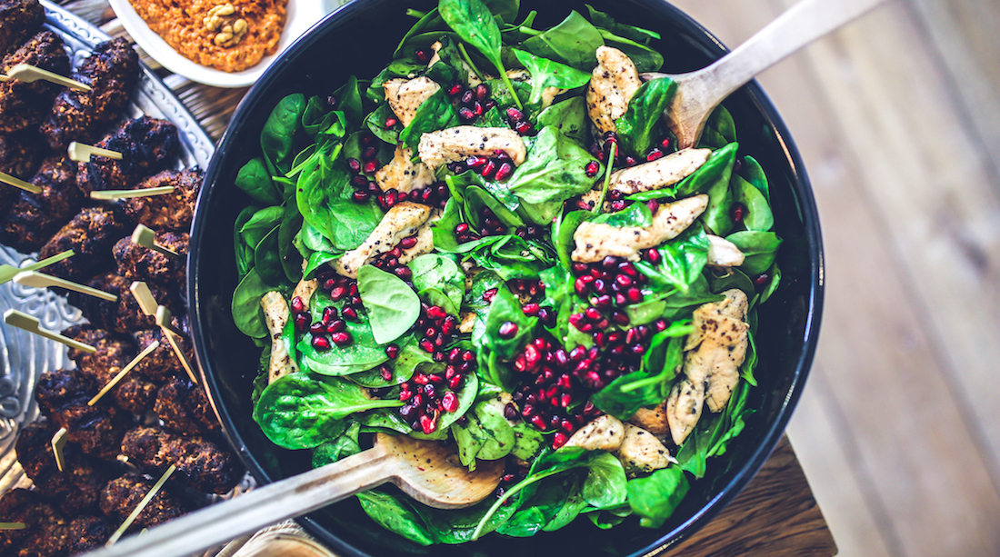

Cheesecake aux Petits écoliers
July 29, 2015
Une douceur sucrée facile qui vous rappelera le bon goût de l'enfance.

Pour 6 cheesecakes individuels ou un grand il vous faut :
♦ 200 gr de petits Ecoliers au chocolat noir
♦ 100 gr de Philadelphia
♦ 2 petits suisse nature
♦ 50 gr de beurre
♦ 20 gr de sucre
♦ 1 œuf
♦ 1 pincée de sel
- Commencez par séparer le chocolat des biscuits avec un couteau fin et réserver le chocolat et le biscuit dans 2 bols différents. Pas de panique si quelques bouts de biscuits se glissent dans le chocolat et invesement.
- Faites fondre le beurre et écrasez le biscuit soit au pilon soit avec le fond d'un verre. Si vous résistez vous pouvez conserver un biscuit qui vous servira à décorer votre dessert au moment de servir.
- Mélangez les miettes avec le beurre fondu.
- Répartissez la pate soit au fond de moules individuels soit dans le fond de verres (façon tiramisu) sur au moins 1,5 cm. N'hésitez pas à bien tasser le tout pour avoir un biscuit homogène.
- Filmez et réservez au frais le temps de finir la préparation
- Faites fondre le chocolat au bain marie
- Pendant ce temps, dans un saladier bien mélangez le philadelphia, les petits suisses et le sucre.
- Incorporez rapidement le chocolat fondu à votre mélange crémeux
- Montez le blanc en neige avec une pincée de sel. Cette étape peut se faire au batteur, au robot mais peut aussi se faire au fouet simple, le cheesecake n'en sera que plus mérité !
- Incorporez l'oeuf en neige à la préparation au chocolat. Mélangez délicatement en soulevant la préparation du fond du saladier vers la surface.
- Sortez les moules/verres du frigo, repartissez la préparation sur la pâte
- Laissez reposer au frais au moins 2h
- Servez frais ou à température ambiante. Vous pouvez décorer le desserts avec des noisettes, du chocolat ou avec un morceau de petit écolier
Courge Butternut farçie
July 29, 2015
Un plat automnal qui rechauffe le coeur et les papilles qu'on peut adapter à tout les cucurbitacées de cette belle saison : courge, potiron, potimarron, citrouille, pâtisson,... Parce que moi la courge je peux plus la voir en soupe !
1 courge, j'adore la butternut elle à un gout et une texture que j'adore
Viande Hachée (350 gr ou à défaut 3 steacks hachés) 5% de MG
Un tranche de pain (rassis de préférence)
1 oignon rouge (pour donner un goût légèrement sucré)
Coriandre
Sel poivre
Paprika
Piment d'espelette
Courge Butternut farçie
July 29, 2015
Un plat automnal qui rechauffe le coeur et les papilles qu'on peut adapter à tout les cucurbitacées de cette belle saison : courge, potiron, potimarron, citrouille, pâtisson,... Parce que moi la courge je peux plus la voir en soupe !
1 courge, j'adore la butternut elle à un gout et une texture que j'adore
Viande Hachée (350 gr ou à défaut 3 steacks hachés) 5% de MG
Un tranche de pain (rassis de préférence)
1 oignon rouge (pour donner un goût légèrement sucré)
Coriandre
Sel poivre
Paprika
Piment d'espelette